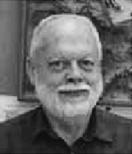

Please note: the AAS Obituaries are temporarily being hosted on this website while their full content is being ingested into the PubPub publishing platform newly adopted by the Bulletin of the American Astronomical Society. When the migration is complete, your existing links will take you to the final, migrated content. Contact peter.williams@aas.org with any questions.
James Adolph Westphal (1930-2004)
James A. Westphal died September 8, 2004. He had battled a neurological disease related to Alzheimer's for the past year. He was 74.
James A. Westphal was born in Dubuque, Iowa, on June 13, 1930. He was raised in Tulsa, Oklahoma, and in Little Rock, Arkansas. Westphal earned his bachelor's degree in physics from the University of Tulsa in 1954, a year after he went to work as geophysical research group leader at Sinclair Research Lab in Tulsa. Westphal first got into the business of scientific instrumentation right after high school, when he did well-logging in Texas and Gulf Coast oil fields. In fact, his work at Sinclair Research Labs involved devising unorthodox methods for oil discovery; one of his discoveries of a new way of processing seismic data first brought him to the attention of Caltech professor Hewitt Dix, who is often considered the father of exploration geophysics.
Westphal arrived at Caltech initially on a four-month leave of absence to devise a data processor for Dix, but never left. He discovered that the academic freedom individual professors enjoy was amenable to his own predilections, so he soon began branching out to other areas of scientific investigation at Caltech. Before long, he had teamed up with Bruce Murray to do thermal infrared scans of the moon in order to see if humans could even walk on the lunar surface without sinking into the dusty soil. Westphal and Murray's work showed that rocky areas could be identified with the thermal imaging, which in turn led to the inference that the Apollo astronauts could safely walk on the soil without sinking. Westphal and Murray also teamed up to do the first infrared imaging of Venus and Jupiter.
Other projects at Caltech led to Westphal's being hired on permanently by Bob Sharp, who at the time was the geology division chairman. In the following years, Westphal involved himself in novel ways of studying volcanism in Hawaii and Mount St. Helens. He invented a simple and very sensitive tilt meter that allowed them to measure the volcano's expansion and help predict upcoming eruptions. Westphal also designed a way of creating a high-pressure aquarium for studies of deep-ocean animals as well as instruments for tracking glacial ice flows and capturing starlight.
Caltech astronomers were pleased to discover that Westphal had an idea for an infrared camera for the historic 200-inch Hale Telescope--at the time the largest optical telescope in the world--that could measure the radiance of galaxies with greater precision and capture fainter galaxies than possible up to that time. He built various other instruments for the Hale Telescope, including a Silicon Intensified Target camera, which was a sort of transitional device between the photographic emulsion plates of the day and modern charged-coupled devices (CCDs) and which produced digital pictures with unparalleled clarity. The instrument is now in the Smithsonian's National Air and Space Museum's collection.
Westphal and Jim Gunn (now at Princeton) recognized early that CCDs would revolutionize astronomy, and in the process of obtaining them for Palomar, Westphal and Gunn decided to put a team of astronomers together and design a CCD camera for use on the Hubble Space Telescope. Westphal was named principal investigator of the proposal and Jim Gunn was his deputy. They teamed with JPL to design the main camera for Hubble Space Telescope. (The Wide-Field / Planetary Camera), which proved to be an enormously successful part of the telescope's scientific mission. Westphal's research came up with a CCD coating that absorbed the UV photons and fluoresced back in the visible thus allowing the instrument to be used in the UV (The engineers dubbed the coating "mouse milk"). He didn't reveal the composition of the coating until NASA announced that the Caltech/JPL proposal was selected to provide the WF/PC Investigation. During the Hubble first light operations Jim had to diagnose the spherical aberration in the main 2.4 meter mirror, which caused the Hubble's initial focusing problems, while being photographed in real time by all the press cameras.
A straight forward fix was devised for the WFPCII camera to bring the images into sharp focus. Once the repaired camera and the Hubble Space Telescope were safely in orbit, Westphal and his collaborators began receiving data on a regular basis. One of the early images of distant galaxies provided especially compelling evidence for the phenomenon known as gravitational lensing. "When this picture came in," Westphal said in a 1995 interview for Caltech's Engineering and Science magazine, "I put it under [Caltech physicist] Kip Thorne's door with a note saying, if you ever have any doubt about gravitational lenses, here's your proof."
He was a member of the American Astronomical Society and served as the chairman of the Division for Planetary Sciences in 1979-1980. In 1991 Westphal received a MacArthur Fellowship. Already a tenured faculty member and the author of scores of refereed journal articles, and the creator of 15 patented inventions, Westphal was named director of Palomar Observatory in 1995 and served for three years. This assignment included being Caltech's representative to the Cara Board (which managed the KECK telescope).
After lowering one of his custom-designed instruments into Old Faithful at Yellowstone National Park to study the geyser's cycling mechanism, he published a paper with Caltech graduate, Sue Kieffer, in 1997. The work, which received a good deal of media attention, confirmed previous assumptions about the geyser and also uncovered new details about the eruption cycle.
Westphal took Caltech emeritus status in 1998, but remained active in research endeavors until his bout with this illness.
Surviving Jim are his wife, Jean Westphal of Altadena; a son, Andrew Westphal, a daughter-in-law, Kim Taylor, and two granddaughters, Theresa and Laura Westphal, all of Richmond, California; two stepdaughters, Robin Stroll of Agoura Hills, California and Susan Stroll of Eagle Rock, California; and an uncle, Eddy Westphal of Indiana.
A portion of this obituary was taken from a tribute by Robert Tindol published September 14, 2004 in an electronic Caltech Newsletter.
--------------------------------------------------------------------------------
Obituary written by: G. Edward Danielson (Caltech, Jet Propulsion Laboratory)
BAAS Citation: BAAS, 2004, 36, 1686
SAO/NASA ADS Bibcode: 2004BAAS...36.1687D